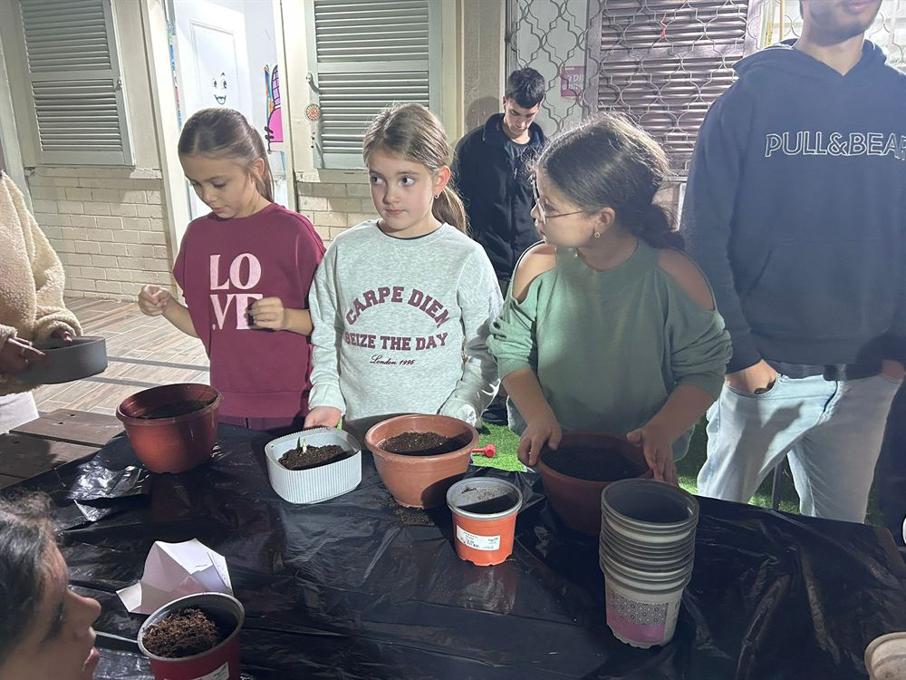
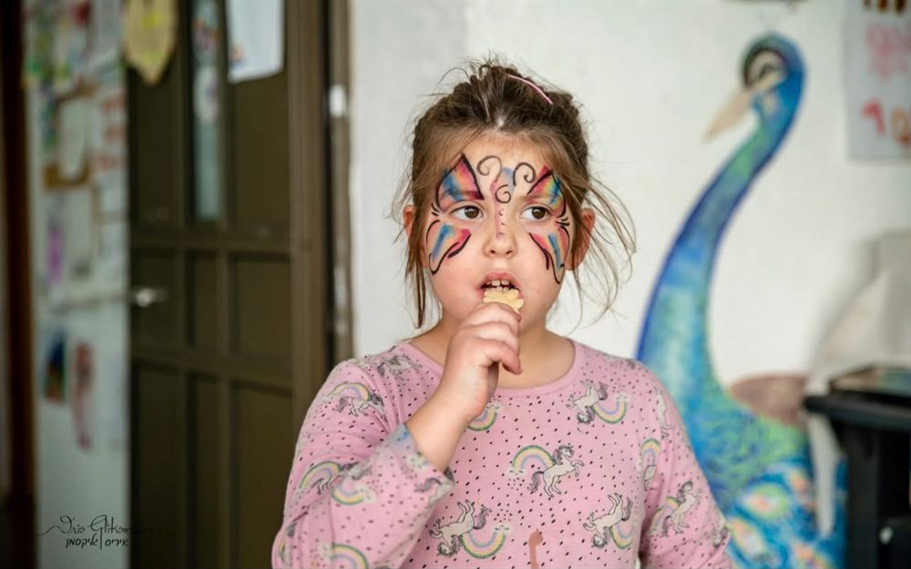
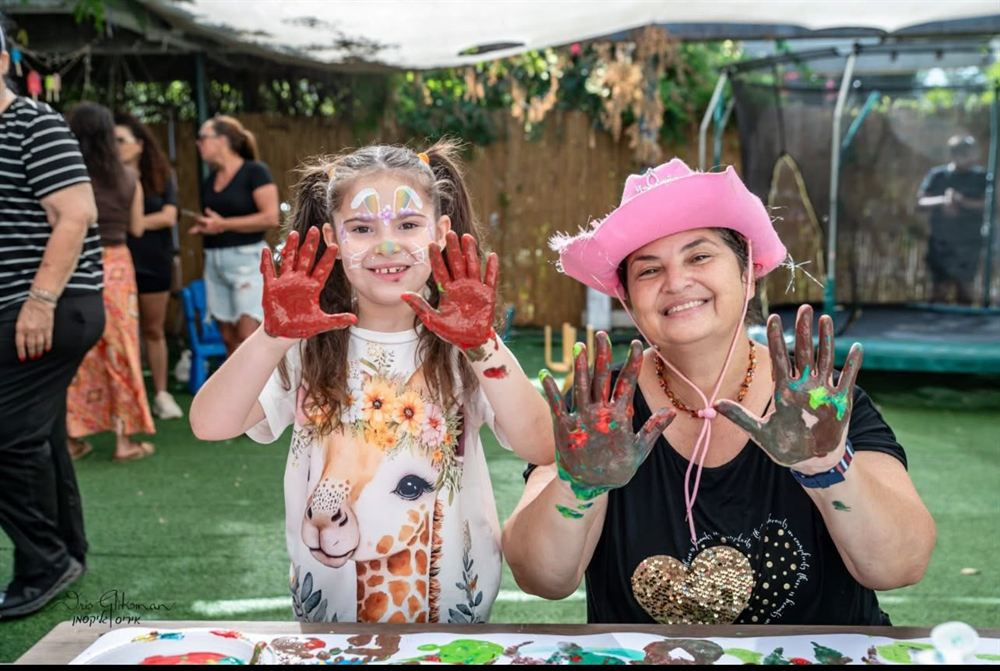
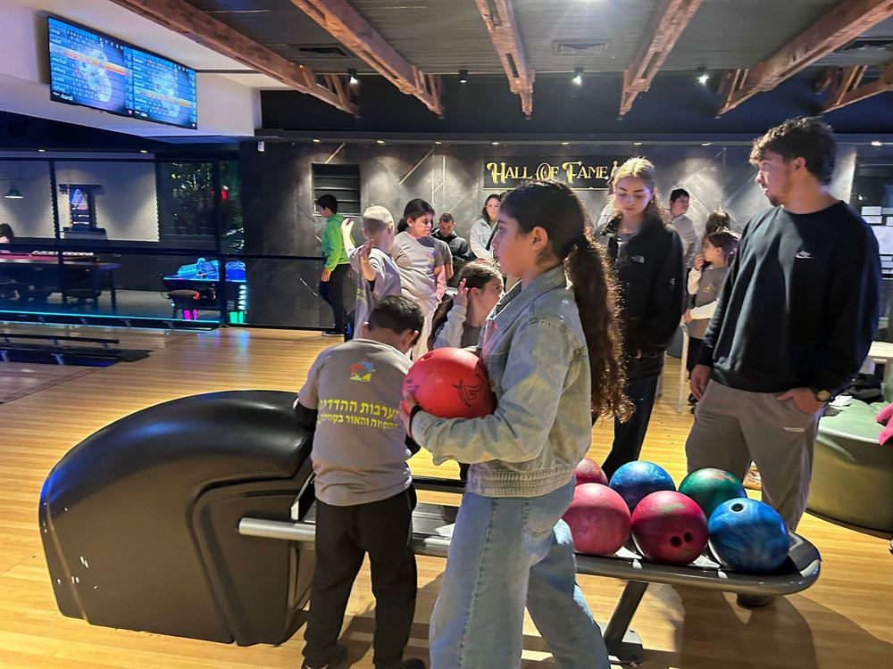

אחים ואחיות
מפגשים אישיים וקבוצתיים שבהם הם במרכז - בעלי צרכים, רגשות, חלומות וקול משלהם.
כשילד מאובחן על הרצף האוטיסטי, המשפחה כולה נכנסת למסע חדש. „בשביל בראשית” הוא המקום שבו האחים, האחיות וההורים עוצרים לרגע - ומקבלים מקום משלהם.




למה הקמנו את בראשית
באופן טבעי, הילד הזקוק לתמיכה רבה מושך חלק גדול מזמנם, מכוחותיהם ומתשומת ליבם של ההורים. בתוך המציאות המורכבת הזאת, האחים והאחיות עלולים להרגיש שלצרכים ולרגשות שלהם נשאר פחות מקום.
לעיתים הם גם מקבלים על עצמם, במפורש או בלי שנשים לב, אחריות שאינה תואמת את גילם: לעזור לאחיהם, להשגיח עליו, ללוות אותו, להרגיע אותו או לוותר למענו. כך הם עלולים להפוך בהדרגה „מאחים” ל„מטפלים קטנים”.
בדיוק עבורם הקמנו את „בשביל בראשית” - מרחב רגשי בטוח, חם ומכיל, שבו האחים והאחיות יכולים לעצור לרגע, להיות במרכז, לשתף, לשאול, לפרוק ולהבין שהם אינם לבד.

מקום לעצור בו ולהיות במרכז
במרחב אנו מעניקים
אנחנו לא מבקשים מהאחים לאהוב פחות או לעזור פחות. אנחנו מבקשים לאפשר להם להיות קודם כול ילדים.
„בשביל בראשית” - נותנים מקום לכל ילד במשפחהלמי המרחב מיועד
מפגשים אישיים וקבוצתיים שבהם הם במרכז - בעלי צרכים, רגשות, חלומות וקול משלהם.
ליווי והדרכה מתוך הבנת צורכיהם של כל ילדי המשפחה - לא רק של הילד המאובחן.
שיח פתוח, קשוב ומאוזן יותר בבית. כי כאשר רואים ומחזקים את האחים - מחזקים את המשפחה כולה.
ספרו לנו קצת על המשפחה שלכם ואנחנו נחזור אליכם עם כל הפרטים.